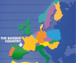

De: La Frikipedia, la enciclopedia extremadamente seria.
De: La Frikipedia, la enciclopedia extremadamente seria. De: La Frikipedia, la enciclopedia extremadamente seria.
| De la serie Países del planeta tierra: | |||||
| Ehm, perdón, quería decir: País de Euskadi | |||||
|---|---|---|---|---|---|
| |||||
| Lema: Ostia Patxi | |||||
| Himno: El canto del Txakoli
| |||||
| 
| |||||
| Capital | Apatamonasterio | ||||
| Mayor ciudad | Bilbo La Ostia | ||||
| Lenguas oficiales | Euskera | ||||
| Gobierno | Españolista de mierda | ||||
| Gran cocinero | Karlos Arguiñano | ||||
| Área | Asia | ||||
| Población | unos 6.000 millones de personas | ||||
| Moneda | Duros | ||||
| Zona horaria | GTM +1 | ||||
| Dominio Internet | .eu o .eusk o .es (nadie sabe cual es correctamente) | ||||
| Código telefónico | 3400
| ||||
| Un país de la ostia | |||||
País que pertenecia antiguamente al Reino Navarrorum,, limitando al norte con Nexus 6, para combatir a la próxima venida de Jesús, que se cree que será aún más poderosa que Cyberjesús.
Se supone que la evolución humana nació en Vascongadas. No, no en África ni pollas, fueron los monos vascos los que bajaron de los árboles vascos al suelo vasco, y dijeron: "La hostia Paxti, ¡Que tenía el culo jodio con la rama esa, vamos a echar una partida al mus!"
Los vascos fueron extendiéndose por el planeta y su impoluta lengua fue degenerando en las lenguas romances y comanches. De ahí que todos seamos un poco vascos, pero sólo un poquito. A falta de pruebas suficientes, también se cree que pudo ser un grupo nómada que decidió asentarse en esa región tras vagar por el desierto de Monegros. Los primeros documentos escritos son de 1933, cuando Xavier Arzalluz declara que el gobierno de España estaba atacando su pueblo cuando puso un puesto de chucherías en la frontera.
En los años 40 hubo un rápido desarrollo en la economía gracias a la industria, pero un fallo en una fábrica provocó el posiblemente mayor desastre ecológico y humano de la historia de Euskadi: El accidente de Gernika. Una nube de gas tóxico intoxicó a decenas de personas, que en consecuencia quedaron irremediablemente mutadas y condenadas a ser mutantes blancos deformes.
A consecuencia de este desastre, el país quedó en cuarentena durante 20 años, en los cuales no se movió una mosca. Estaba prohibido acercarse a él, y a sus inmediaciones. A los 20 años, curiosamente, cedió toda la radiactividad y los mutantes, quedando lo que, según las personas que se adentraban, se calificaba como "Un país normal".
En realidad, fue entonces, a mediado de los años 60 cuando los Estados Unidos de Américaterminaron su plan para esclavizar y convertir a Euskadi en un campo de experimentación. Un sistema de satélites proyecta una imagen de una ciudad normal para que la gente no se dé cuenta, pero ahí está.
En 1985, McGyver viajó a los Pirineos vascos para rescatar una rehén geóloga que los vascos habían secuestrado para que les construyese una bomba nuclear y así poder acabar con los franceses. Este suceso fue motivo de una grave crisis internacional entre el gobierno vasco y el norteamericano.
Actualmente, los vasvcos están reclamando, básicamente, que son más vascos que nosotros. No hay muchas razones que justifiquen todo el porculo que llevan dando, pero se supone que los americanos utilizan Don-Ostia Sagrada como base secreta para construir EVAs y desarrollar el Programa de Complementación Humana
Hay teorias de wikipedia que dicen que los Visigordos intentaron invadir Euskadi como los Españoles.
La industria ha sido la principal revitalizadora de la economía vasca, bajando en picado después del accidente de Guernika y manteniéndose estable despues de los años 60, cuando pudo recuperarse debido a que los americanos tomaron el control.
Se cree que no existen habitantes libres en su territorio : Robots multiformes levantan piedras, nazis controlados por franco dicen que Euskadi es España y Nacionalistas con mala ostia. También se les cría como comida para otros humanos, alimentándolos de queso. Algo espantoso.
Las ultimas investigaciones apuntan que los pocos ejemplares que los científicos españoles no han logrado averiguar si era o no humanos sufren el llamado problema vasco, es decir que allí no folla ni dios,, dando más veracidad a la hipótesis antes dada.
Su Anterior Goberndor , el Lehendakari Ibarretxe es en realidad un tridimensional muy realista hecho por los supercomputadores americanos para simular un líder vasco. Éste está evidentemente controlado desde américa, por lo que constituye un gobierno títere. Mientras tanto, el verdadero Ibarretxe se encuentra navegando la galaxia a bordo de la nave "Kawen Zotz" o "Entrepizzas".
Actualmente el País Vasco esta dirigido por ZP atraves de un extraterrestre controlado por franco que se hace llamar Lehendakari Nazi Lopez.
Todos orientados a las nuevas tecnologías.
Autor(es):